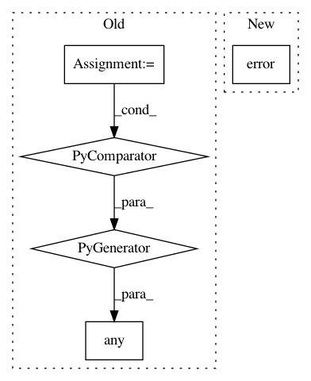

aee98cea97ea0fb49f053c2212e9294dd121ca1b,perfkitbenchmarker/providers/gcp/gce_virtual_machine.py,GceVirtualMachine,UpdateInterruptibleVmStatus,#GceVirtualMachine#,775
Before Change
self.zone, self.name)
gcloud_command.additional_flags.append("--log-http")
stdout, _, _ = gcloud_command.Issue()
self.early_termination = any(
operation["operationType"] == "compute.instances.preempted"
for operation in json.loads(stdout))
def IsInterruptible(self):
Returns whether this vm is an interruptible vm (spot vm).
After Change
stdout, stderr, return_code = self.RemoteCommandWithReturnCode(
_CHECK_INTERRUPT_CMD)
if return_code:
logging.error("Checking Interrupt Error: %s", stderr)
else:
self.spot_early_termination = stdout.strip() == _SHUTDOWN_MARKER
def IsInterruptible(self):
In pattern: SUPERPATTERN
Frequency: 3
Non-data size: 5
Instances
Project Name: GoogleCloudPlatform/PerfKitBenchmarker
Commit Name: aee98cea97ea0fb49f053c2212e9294dd121ca1b
Time: 2020-06-24
Author: tohaowu@google.com
File Name: perfkitbenchmarker/providers/gcp/gce_virtual_machine.py
Class Name: GceVirtualMachine
Method Name: UpdateInterruptibleVmStatus
Project Name: aertslab/pySCENIC
Commit Name: 0e6804ca93a4f76300134a126d5942114b71901c
Time: 2018-12-14
Author: vandesande.bram@gmail.com
File Name: src/pyscenic/cli/pyscenic.py
Class Name:
Method Name: prune_targets_command
Project Name: aertslab/pySCENIC
Commit Name: d23794e515aac062b94c9e492143d97ec55c9cc9
Time: 2018-12-14
Author: vandesande.bram@gmail.com
File Name: src/pyscenic/cli/pyscenic.py
Class Name:
Method Name: aucell_command